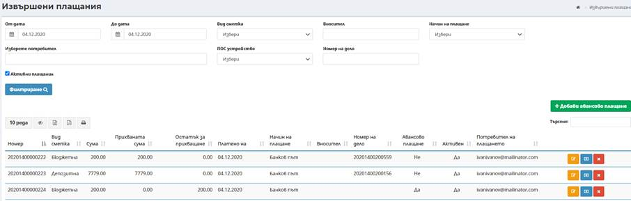
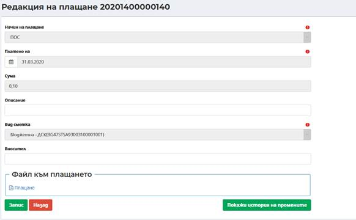
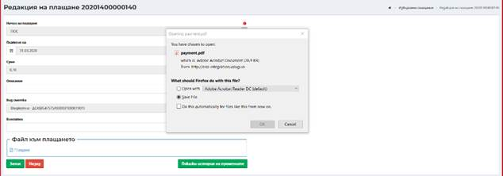
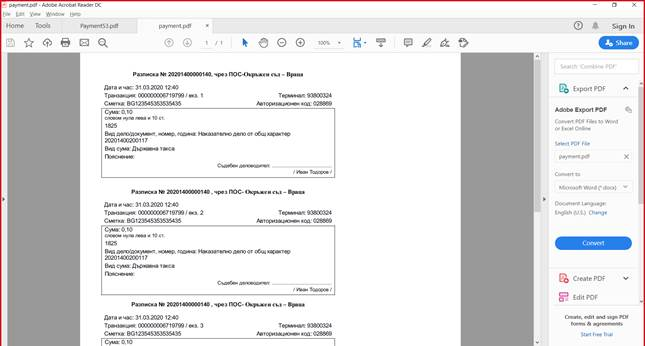
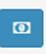
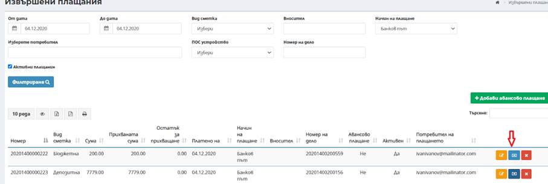
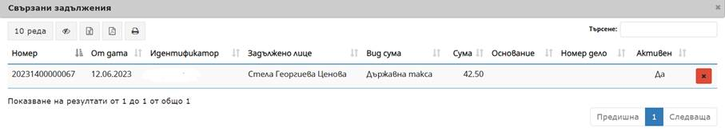
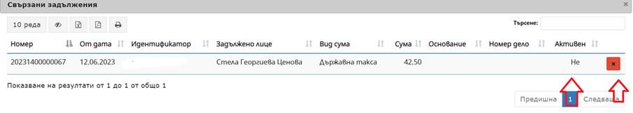
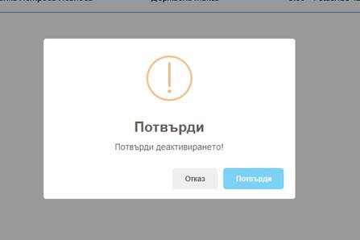
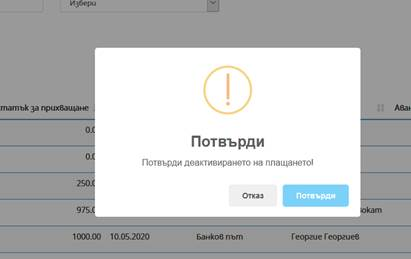

Извършени плащания се използва за проверка на плащания, корекция на извършени плащания, изтриване на грешни плащания и обвързване на плащания.

- От дата – До дата – избира се началната и крайна дата за филтриране на резултата;
- Вид сметка – избира се в зависимост от това, за какво е предназначено авансовото плащане (бюджетна или депозитна сметка);
- Вносител – въвежда се името на вносителя на сумата по задължението;
- Начин на плащане – избира се начин на плащане от страната – през ПОС терминал или по банков път;
- Изберете потребител – по подразбиране са заредени данните на потребителя, който извършва справката за извършени плащания, с възможност за промяна. Полето позволява избор на потребител чрез автоматично попълване след търсене по минимум три последователни символа от имената или идентификатор на активния съдия-докладчик
- ПОС устройство – избира се съответното устройство;
- Номер на дело –въвежда се номера на делото.
- Активни плащания – чрез избор на чекбокса се зарежда списък с всички активни плащания.
Посредством избор на бутон Редакция има възможност за преглед на генерирана от системата Разписка за плащане през ПОС терминал.

Избира се хипервръзката на генерирания файл в секция Файл към плащане.

Разписката може да бъде записана локално или да бъде отворена за преглед. След отваряне се визуализира генерираната Разписка в съответния брой екземпляри.

Всяко авансово плащане може да бъде прегледано и впоследствие редактирано посредством избор на бутон Редакция .
Екранът за редакция съдържа аналогични полета като тези при въвеждане.
Посредством избор на бутон Свързани задължения


Визуализира се списък със свързани задължения по авансовото плащане.

При наличие на грешно прихващане на задължение от авансово плащане, посредством бутон Деактивиране има възможност да се деактивира прихванатото плащане за погасяване на задължението.
След деактивирането в колона Активен статуса се променя от „Да“ на „Не“.

Визуализира се предупредително съобщение с възможност за потвърждаване на действието от потребителя или отказ.

След избор на бутона Потвърди се премахва прихванатото плащане. При избор на бутон Отказ състоянието на прихванато плащане остава непроменено.
Посредством бутон Деактивиране има възможност за деактивиране на грешно плащане:

Визуализира се предупредително съобщение с възможност за потвърждаване на действието от потребителя или отказ.
След избор на бутона Потвърди се премахва плащането. При избор на бутон Отказ състоянието на плащането остава непроменено.